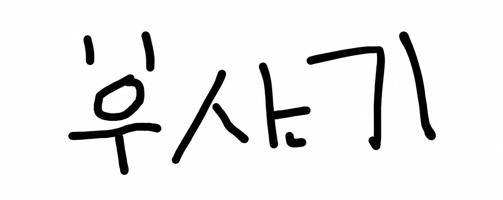
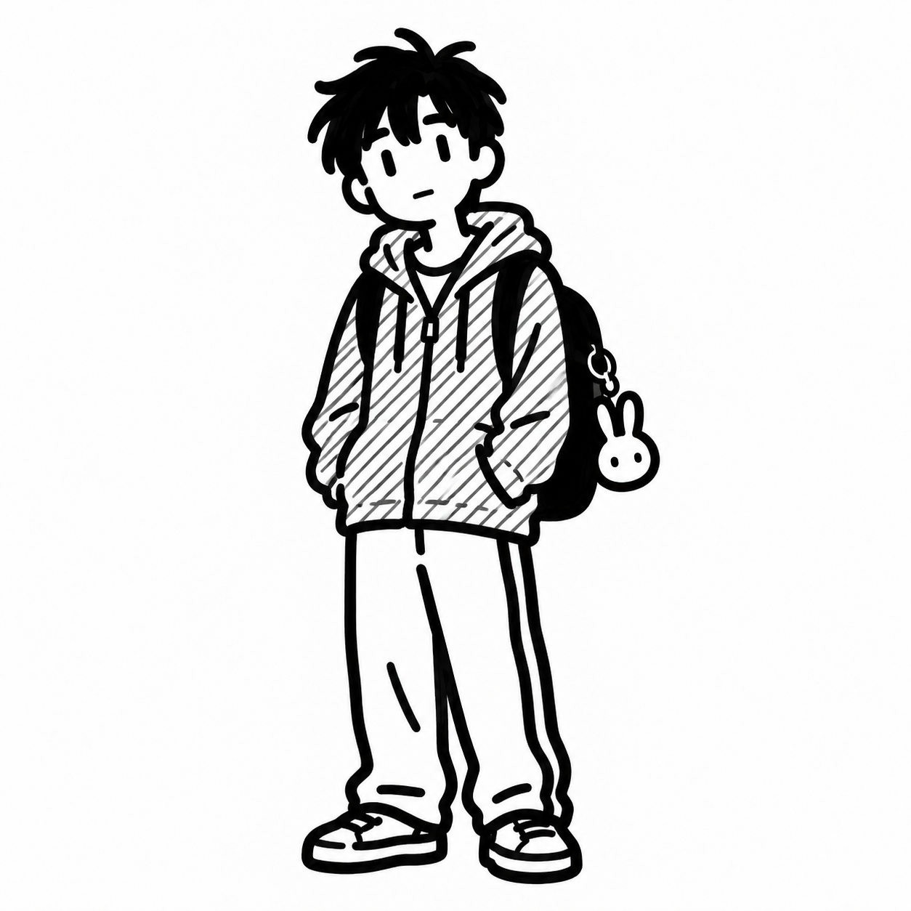
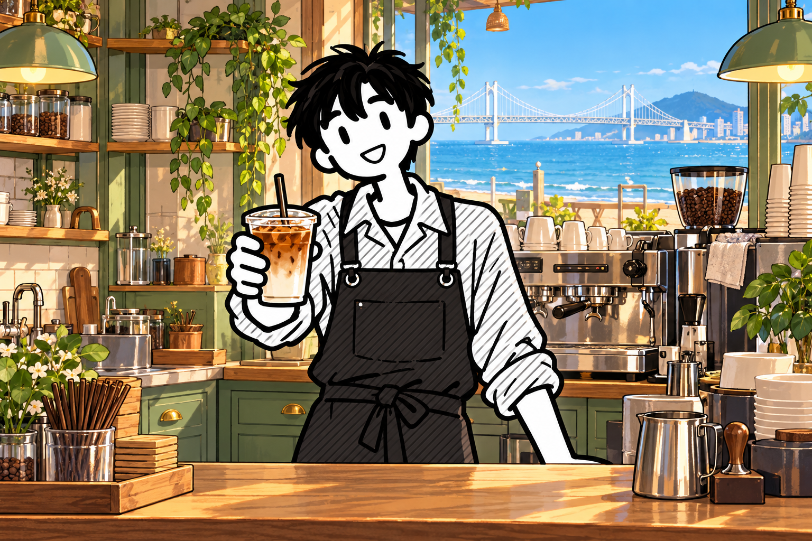

잠깐 쉬어가도 괜찮아
무료 휴식은 1분마다 체력과 정신력을 각각 1 회복해. 이 화면을 열어둬야 해.
나만의 속도로, 나만의 부산 키우기

일하고, 배우고, 놀면서
부산기와 함께 자라는 부산 생활.
너의 첫 번째 부산 이야기가 시작되는 곳.
일하고, 배우고, 놀면서 발견하는 나의 부산.
LOCAL PROTOTYPE · 0.2부산기에 온 걸 환영해! 오늘은 무엇부터 해볼까?
MY BUSAN LIFE
작은 아르바이트부터 나만의 부산 생활을 시작해봐.
부산역 배경 일러스트 준비 중

새 옷을 사면 정신력이 회복되고, 옷장에 영구 보관돼.
굿즈 컬렉션부터 나만의 코디까지. 구매한 옷은 밥 먹기·카페·휴식 등 모든 배너 행동에 반영돼. 재킷은 상의 위에, 신발·모자·바지는 따로 착용할 수 있어.
현재 착용한 옷을 보고 있어.
무료 휴식은 1분마다 체력과 정신력을 각각 1 회복해. 이 화면을 열어둬야 해.
보유 자산 + 주식 평가금액 + 보유 재화
방문한 장소 1 / 9
WORK & GROW
손끝으로 일하고, 부산기의 첫 수입을 만들어봐.
안전모를 쓰고 벽돌을 메고 올라가자. 다음 계단이 같은 방향이면 올라가기, 반대면 방향 전환!
체력 −20 · 정신력 −15 / 기본 3,000원 + 계단당 500원
주문표 순서대로 재료를 눌러 음료를 만들어봐. 60초 근무를 마치면 보너스 10,000원!
체력 −15 · 정신력 −20 / 숫자키 1~4 또는 재료 버튼 터치
ORDER / 지금 들어온 주문
주문표 순서대로 재료를 눌러줘!

근무 완료!
3,000원 획득
지능 조건을 달성하면 지원할 수 있어. 아래 급여는 시제품의 1분 근무 보상이야.
먼저 원하는 직장에 지원해줘.
RANKIING
직장 점수에 총자산 점수를 더해, 나의 성장을 확인해봐.
총점 = 현재 직장 점수 + 총자산 1만원당 1점 · 1만원 미만은 버림
중소기업 1,000점 → 중견기업 2,000점 → 공무원 3,000점 → 공기업 4,000점 → 대기업 5,000점 · 미취업 0점
총자산 = 보유 자산 지분 가치 + 보유 주식 평가금액(조회 시세 × 수량) + 보유 재화. 의상과 아직 수령하지 않은 수익은 제외해.
가입한 회원의 마지막 서버 저장 기록을 기준으로 집계해. 이직해도 직장 점수는 누적되지 않고, 같은 총점은 공동 순위야.
로그인하면 내 순위도 함께 확인할 수 있어.
| 순위 | 닉네임 | 현재 직장 | 직장 점수 | 총자산 | 총자산 점수 | 총점 |
|---|
EXPLORE BUSAN
장소를 고르고, 먹고 마시며 나만의 부산 도감을 채워봐.
식당·카페가 있는 장소에서 구매할 수 있어. 회복은 최대 100까지 적용돼.
FOCUS ROOM
실제 공부 1분마다 지능 +1. 나눠서 공부해도 시간이 이어져.
준비됐으면 시작해봐.
총 공부 시간 0분
7일 연속 공부 기록이 없으면 지능이 1 감소해. 지능은 최대 100이야.
페이지를 닫으면 공부가 일시정지돼. 브라우저가 1분 넘게 멈춘 구간은 시제품에서 누적하지 않아.
BUILD YOUR FUTURE
집·건물·기업·관광시설은 1%씩, 자동차는 한 대씩 구매할 수 있어.
최대 24시간분까지 쌓여. 수령하면 다시 쌓이기 시작해.
표시 가격과 수익은 게임 고정값이야. 관광시설은 실제 장소를 모티브로 한 가상 시설이야.
KOREA STOCK MARKET
게임 재화로 코스피·코스닥 종목을 사고파는 모의투자.
시세 서버 미연결 · 현재 거래할 수 없습니다.
한국투자증권의 KRX 현재가를 조회해 게임머니 1원 = 실제 주가 1원으로 거래해. 매수·매도 수수료는 각각 0.1%야. 장 마감·휴장 시 마지막 가격으로 게임 거래하며, 조회 시각은 실제 체결 시각과 달라.
종목명이나 종목코드를 입력하고 현재가 조회를 눌러줘.
상승과 하락은 숫자·화살표·문구로 표시해. 가상 시세를 실제 주가처럼 표시하지 않아.
BUSAN STATION PLAZA
옷장에서 고른 옷을 입고, 함께 걷고 이야기하는 광장.
멀티플레이 서버 미연결 · 다른 유저와 실시간 대화는 아직 사용할 수 없습니다.
연결 후에는 다른 유저의 캐릭터·의상·직업·자산·능력치도 볼 수 있어.